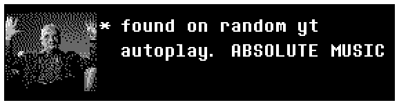

GLEACH JALBUM
I really like this jalbum. It incorporates a lot of that overture having an
"All the Empathy" motif (I believe? I might be hearing things wrong). kate said obviously
having a yoshis
island motif. and I believe there was a bedroom community one that I missed. You can really feel the
visceral emotion oozing from the jalbum. the beginning of the jalbum was pretty jarring but I like jarring.
Favourite track: you are an angel (subject to change though, I never have a favourite track for long)
One Raga to a Disco Beat
